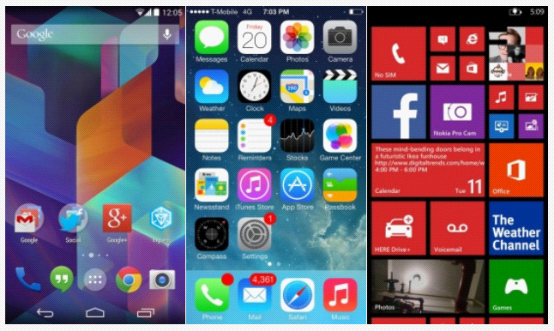
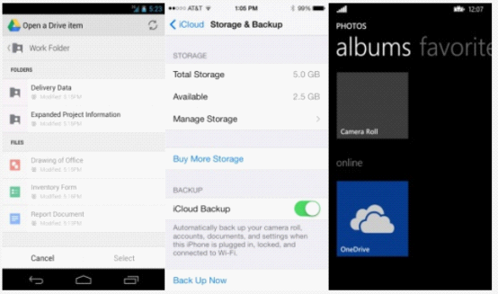
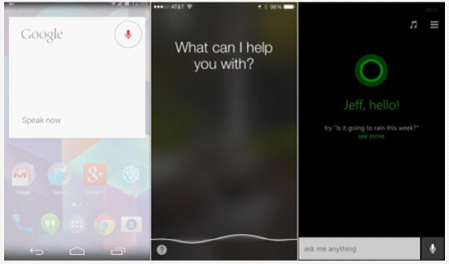

If you are planning to buy a new smartphone (perhaps your first smartphone), how to spend your money well and be satisfied is very important. And choosing a smartphone is actually, to a large extent, choosing an operating system. If you are torn between iOS, Android, and Windows Phone and don't know which one to buy, the foreign tech website DigitalTrends recently made a side-by-side comparison of the three major operating systems across various aspects, picking a winner for each feature and category, hoping to help you buy the smartphone you are happy with.
Value for Money
When it comes to price, Apple always takes the lead. Every generation of iPhone is one of the most expensive smartphones on the market at the time. The $200 (approximately RMB 1,230) contract price and $650 (approximately RMB 4,000) unlocked price are higher than most rivals. Even a budget version like the iPhone 5c, which is $100 cheaper, is still not cheap.
Nokia, now acquired by Microsoft, has always been good at producing quality products at low prices. Nokia launched WP phones at various price points, severely limiting the room for competitors like Android and iOS to play in the entry-level market. And including Samsung, ZTE, LG, Lenovo, and Huawei, among others, will also become Microsoft partners in the future, launching more low-priced smartphones.
Of course, compared with Android, WP cannot be mentioned in the same breath in terms of product categories and scale. A large number of manufacturers are doing their best to produce all kinds of models with ultra-high value for money on the Android platform, and Android's free strategy further helps reduce product costs. Samsung, Sony, LG, HTC, ZTE, Huawei, and other manufacturers are major sources of Android system products.
Winner: Android
Interface

Led by WP, the three mainstream systems have begun to shift toward a simple, flat, easy-to-use, and colorful interface. The biggest difference is that many Android phone makers customize the operating system themselves, so there are many variations. Although the interface structure of the three major systems is basically the same now, such as pull-down notification center, app dock, and icons, Android is still stronger than iOS and WP in terms of interface diversity.
The just-released Android L has also ushered in a brand-new "Material Design" style, perfectly combining minimalism and simple animations to create a new style for Google platforms and applications. However, it is not yet clear how much impact Android L will have on the operating system market.
Apple, starting with iOS 7, has made the system design flatter and more colorful. The depth switching looks very cool, and the icon changes are also very easy to understand. This change is the most obvious difference since the first iPhone was launched in 2007. However, there are still many people who are not satisfied with the changes in iOS and prefer the original skeuomorphic design.
WP uses a grid-based tile design, and the tiles can be resized. It looks like Windows 8, but without desktop widgets. In the eyes of some users, WP's style is much more fashionable than iOS and Android.
Winner: Tie
Applications
In terms of the number and quality of applications, WP is far behind the two giants iOS and Android.
Android: 1.2 million;
iOS: 1.2 million;
Windows Phone: 245,000.
iOS has always been at the top in both the number and quality of applications, and it is also the platform preferred by developers. Although Android seems to be catching up recently, and the Google Play Store has more and more free apps and games, it still cannot compare with iOS in terms of variety and quality.
Winner: iOS
App Store Ease of Use

In fact, none of the three platforms' app stores provides a perfect user experience, and it is not easy to find exactly what you want among hundreds of thousands of applications. However, relatively speaking, Apple's App Store is more specific in categorization and recommendations than Google's Google Play, while Microsoft's Windows Phone Store ranks last in both interface aesthetics and ease of use.
Winner: iOS
App Store Diversity
On Android, whether you connect via USB to copy apps to your computer or download directly, installing applications is very convenient. In addition, the Android platform has many third-party app stores to choose from, although this also increases the risk of malware infection. If you want more store options and a simple way to install and uninstall, the result is obvious. Android is more open and friendly than its two competitors.
Winner: Android
Battery Life and Management

As one of the biggest challenges for smartphones, battery life has always been the biggest influencing factor. Since the hardware of the three platforms is not universal, it is difficult to compare directly. Although the iOS system has optimized every milliamp-hour of power to the extreme, Android devices can easily adopt larger-capacity batteries. In addition, the Android system has many apps that can accurately estimate the remaining battery, and most manufacturers also provide a power-saving mode that can reduce performance or shut down background processes when the battery drops to a certain level.
Android L will also have a built-in battery protection option, while the WP system allows users to turn off background features and other unnecessary functions to save power. Although Apple gave a more detailed introduction to the battery statistics method of iOS 8 at the press conference, it still lacks effective power management apps or measures. And in one battery comparison, the iOS 7 system consumed power very quickly.
Winner: Android
System Updates
All three platforms do a good job with system updates, pushing relatively large-scale upgrade releases every few months to fix bugs and add new features. In addition, because Apple and Microsoft control the upgrade pace of their systems themselves, they are better than Android in terms of compatibility and timeliness.
Although Apple leaves some of last year's products on the market every year, it has solved the system fragmentation problem the best. And we all remember clearly how Microsoft abandoned Windows Phone 7 users and how Google has the most serious fragmentation problem. Unless you use a Nexus device, you will receive updates from Google as soon as they are released. Otherwise, whether it is Sony, Samsung, or LG, if the OEM manufacturer does not act, you may never be able to upgrade. In addition, some users are also limited by carriers and may not be eligible to experience the latest Android or WP system features. Therefore, Apple does the best in this regard.
Winner: iOS
Customizability

Although all three systems have quite a few customizable elements, it must be admitted that this is definitely an advantage for Android. When you get a new phone, you can make various settings according to your own preferences; you can also install desktop launchers to change the operating interface; set lock screen interfaces, switch between multiple wallpapers, freely resize desktop widgets and quick-launch icons. iOS and WP can only provide limited options, allowing only wallpapers and quick-launch icons to be set.
WP allows users to change the size and color of tiles, and WP 8.1 adds a background image feature. As for iOS 8, although it can add some widgets in the future, they are limited to the Notification Center. In addition, Google has always allowed Android users to install third-party input methods. Microsoft has been improving its default input method, but has never opened the door to third parties. And iOS 8, which will be officially released this fall, is also beginning to take an open attitude toward third-party input methods.
Winner: Android
Rooting, Bootloader, and Jailbreaking
For Android devices, once you gain root access, you can change the system as you wish. Although this is not suitable for everyone, you can get more apps, install the latest system without waiting, get the newest UI, get rid of bloated carrier preinstalled software, and even greatly improve the device's running speed or battery life.
Many Android manufacturers even provide official bootloader tools, allowing deeper customization of your phone. This is absolutely not allowed by Microsoft and Apple. Only a very small number of WP models can be rooted and have bootloader unlocked, while iOS jailbreaking has always been in constant conflict with Apple. Even after jailbreaking, it is just bypassing the App Store to install applications and some system plugins.
Winner: Android
Phone Calls and SMS
Three platforms each have their strengths in this feature. Google has integrated everything into Hangouts, enabling phone calls, texting, and even video calls over Wi-Fi. On iOS, FaceTime and iMessages can do almost the same thing. Microsoft offers deep integration with Skype and supports other platforms besides Windows. Hangouts doesn't work on Windows, and iMessages and FaceTime only support communication between iOS and OS X systems.
Winner: Tie
The default email services on Android, iOS, and Windows Phone are all very useful and quick to set up. You can switch between multiple email accounts and view them in the same inbox. In addition, Android and iOS offer a large number of third-party email apps.
Winner: Tie
Peripherals
Survey data shows that iPad and iPhone users are more willing to spend money on companion accessories than Android and WP users. Apple has teamed up with accessory makers to build a complete ecosystem for iOS devices. Many manufacturers have launched their own products for the iPhone, with the Samsung Galaxy S5 following closely behind. On the other hand, Android and WP both use the standard microUSB port, while Apple insists on its own Lightning connector. So if you aren't using an iPhone, it's easier to find universal chargers, and you don't need to spend extra money on adapters. Although accessory makers still target iOS users as their main market, it's now very hard to find devices that don't support microUSB.
Winner: iOS
Cloud Services

Apple is quite far behind in cloud storage and automatic backup. Microsoft OneDrive and Google Drive both offer 15GB of free cross-platform storage (although Google Drive currently doesn't support WP), while iCloud users only get 5GB of free space, limited to Windows, Mac, and iOS. In addition, if you need to buy extra space, Google Drive is the cheapest—100GB costs only $24 a year (about RMB 145), Apple charges $100 a year for 50GB (about RMB 615), and Microsoft charges $50 a year for 100GB (about RMB 307).
Winner: Android
Photo Backup
If you use Google+ on an Android device, you can automatically back up all your photos and videos. Google+ is also available on iOS. OneDrive supports automatic backup across all three systems, while Apple's iCloud only backs up the most recent 1,000 photos from the past month and does not include videos. Although iOS 8 allows permanent photo backup like the other two systems, the 5GB space is still too stingy compared with Google Drive and OneDrive's 15GB.
It's also worth noting that Google Drive can back up photos and videos without limits, and only original-resolution photos take up space.
Winner: Android
Voice Assistant

Recently, there have been quite a few comparisons among Siri, Google Now, and Cortana. All three voice assistants can interpret and execute various commands. Siri acts like a simple assistant—setting calendar appointments, doing web searches, and making calls. Google Now can additionally provide useful information without users needing to ask. If you allow Google Now to collect data, it will automatically provide you with nearby restaurants or the game results of your favorite team.
Cortana can not only do what Siri and Google Now do, but can also be invoked within third-party apps, set reminders, and even send messages to contacts. It seems Microsoft has put a lot of effort into Cortana, and in the future it will be a huge advantage for the WP platform over iOS and Android.
Winner: Windows Phone
Connectivity
All mobile platforms support Bluetooth and Wi-Fi. Android and WP support NFC better, making short-range data exchange and mobile payments more convenient, but iOS currently doesn't. NFC can be used for quick file transfer, sharing contacts or web links, and even controlling mobile speakers to play music. However, WP's NFC support is currently not very good, but it will improve in the latest WP 8.1.
Winner: Android
Security
Most malicious apps target Android devices, so security issues are always the biggest obstacle for Google. However, as long as users stop downloading apps outside the Google Play Store, they won't face too many security problems. App stores developed by major manufacturers like Samsung also have security guarantees.
Apple, on the other hand, does a very good job in this regard, providing strong security for average consumers. Especially the latest TouchID fingerprint recognition and the partnership with IBM for enterprise users help Apple better protect customer security. This is also one of the biggest advantages iOS has over Android. As for Windows Phone, because its adoption isn't widespread enough, not many malware creators are interested in WP. However, Microsoft has a fairly good security reputation among business users.
Winner: iOS
Maps

All three platforms provide excellent map solutions, and most functions are similar, including offline downloads, traffic analysis, and navigation. However, Google Maps is definitely better, offering more detailed points of interest, more detailed information, and precision.
Winner: Android
Camera
The camera is another area where Apple has a huge advantage. Although the Galaxy S5, Lumia 1020, etc., surpass the iPhone 5s's 8 megapixels in pixel count, you have to admit that the iPhone 5s is the most satisfying in terms of photo color, detail, and overall effect.
In addition, the iOS camera app interface is fast and easy to use, with no overly complex adjustments or settings, allowing you to take photos anytime, anywhere. On Android, many OEM manufacturers add their own camera apps, so many features are actually useless gimmicks. Apple is undoubtedly the winner again.
Winner: iOS
Ease of Use
After years of development, the three major platforms have all become very intuitive and easy to use. For an older user, a somewhat complex operating system like Android may not be suitable. However, Samsung has developed a "Simple Mode" to simplify phone operations, or you can install third-party apps to achieve the same purpose. Both Android and iOS have many apps specifically designed for elderly users.
Some people think Android is more complex than iOS, but that's a bit too absolute. As long as you don't want to, there's no need for deeper customization. WP, on the other hand, is more intuitive in its interface, and after simple setup, there aren't many options for deep adjustment.
Winner: Tie

Summary
Android is by far the most feature-complete platform. With support from manufacturers like Samsung and LG, consumers have more product choices at different price points, more freedom, and more customization options, allowing them to build a perfect smartphone according to their own preferences.
Google's cloud services and applications are also a major draw for consumers. However, Android's biggest advantage also brings its biggest negative impact—system fragmentation. The experience gap between flagship and entry-level models is too large, causing many users to have a poor impression of Android, although Google has been trying to narrow this gap.
iOS is a very stable, mature platform and provides a unified interface. The best app store, the most accessory options, and the best camera all contribute to Apple's ability to make everything simpler. In addition, Apple strictly controls system version updates, allowing both consumers and enterprise users to experience the latest version of the system as soon as possible.
iOS's shortcomings are high prices, being too closed, lacking customizability, and not very generous cloud services.
In this comparison, Windows Phone, having been on the market for the shortest time, always seems to be in a "supporting role," but Microsoft is catching up to Apple and Google through unremitting efforts. In the upcoming WP 8.1 system, we can see very obvious progress, especially the advantage of the Cortana voice assistant. However, the lack of high-quality apps is also the biggest weakness of the WP platform. Still, in ease of use, WP is by no means inferior to iOS and Android. Microsoft's powerful cloud services and the popular Office tools can attract many enterprise users. But for now, besides Cortana, there doesn't seem to be any other compelling reason to attract consumers.
Source: Tencent Digital, original article:digitaltrends
Click to Share Notes
<p style="font-size:14px;">Notes must be an extension of this article's content!</p><br> <p style="font-size:12px;"><a href="../tougao.html" target="_blank">Article submission, click here</a></p> <p style="font-size:14px;"><a href="./runoob-user-test-intro.html" target="_blank">How to get registration invitation code</a></p> <h3 class="text-muted"><i class="fa fa-info-circle" aria-hidden="true"></i> You must <a href=".." class="runoob-pop">log in</a> before sharing notes!</h3> <p><a href="./runoob-user-test-intro.html" target="_blank">How to get registration invitation code</a></p>